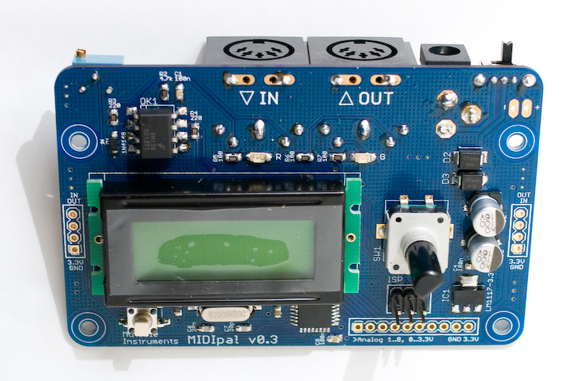
The MIDIpal board features:
- A regulated 3.3V power supply, taking power from either a DC wall wart or a 9V battery.
- An ATMega328p clocked by an external 20 MHz quartz.
- A MIDI output and input, with opto-isolation.
- An 8x1 LCD module, 2 LEDs and a clickable encoder.
- A reset button and a 2x3 ISP connector used during firmware development.
Schematics and PCB
Here is an image of the board:
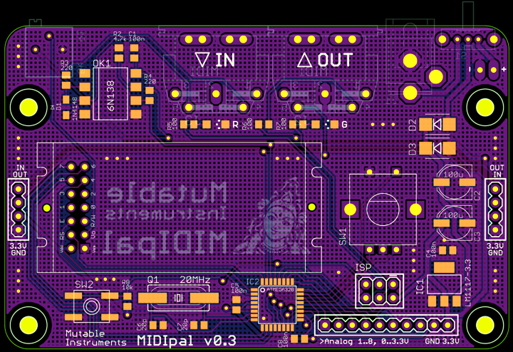
Note that all the SMD parts are on the top side of the board, while all the through-hole connectors are on the bottom of the board.
You can find the Eagle files for this board in the
midipal/hardware_design/pcb directory of the source code hosted on
github.
The schematics in PDF format are here.
Bill of materials
Assembly instructions
SMT soldering in short
-
Get a flux pen and some solder wick
-
Get some thin solder, at most 0.5mm. Digikey #82-117-ND has been reported to be very well suited for this job!
-
Clean your iron's tip!
-
Watch the best video tutorial ever.
-
Sissy method for soldering the TQFP ATMega, aka "tip-pin-pad-solder rendez-vous":
-
Apply solder on a pad in a corner
- Heat the pad and move the chip in until it is correctly aligned
- Are you sure the chip is correctly aligned? Really?
- Apply flux abundantly on the 4 sides of the chip
- Touch pin 1 with the tip of the soldering iron
- Hear the crackling sound of the barbecued flux
- Touch the pin and the tip of the soldering iron with the tip of your solder
-
Repeat for each pin
-
Things go wrong because:
-
The tip of your iron was dirty
- You have not applied enough flux
-
You have not aligned the chip in such a way that the pins are sitting in the middle of their pads
-
When soldering resistors, capacitors, etc. start by a pad that is not grounded. Heat it, apply solder, move the part in with the tweezers. Solder the other side. Starting with a grounded pad is more difficult because of heat being dissipated on the ground plane.
Step 1: ATMega328p
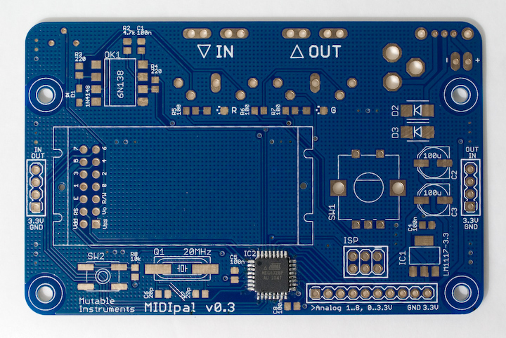
This part is the most difficult, so start by this. After having soldered it, check that there is no short between adjacent pins. Use solder wick to remove bridges -- even if you need to rework it 4 or 5 times it cannot go wrong (here is a photo of a fully working board the MCU solder job of which had been redone 8 or 9 times).
{kind=link}
Step 2: 4x 100nF caps
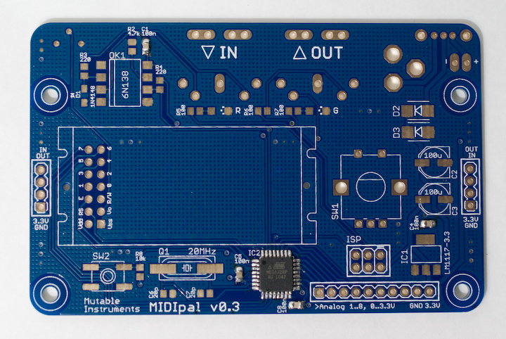
Step 3: 1x 10k resistor, 2x 22pF caps
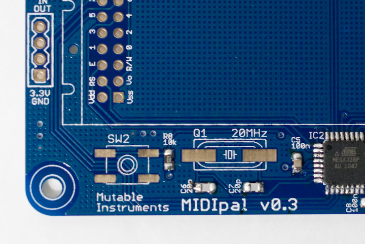
Step 4: 1x 20 MHz quartz, 1x switch with gull wings
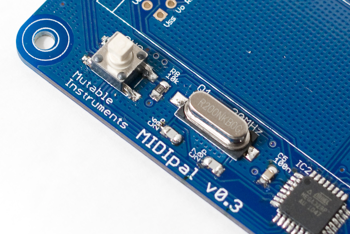
Step 5: 2x 220R resistors, 1x 4.7k resistor, 1x 4N4148
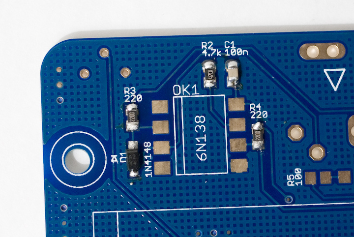
There is a stripe marking the cathode of the diode. It goes "up". See the little diagram silkscreened above D1.
Step 6: 1x 6N138
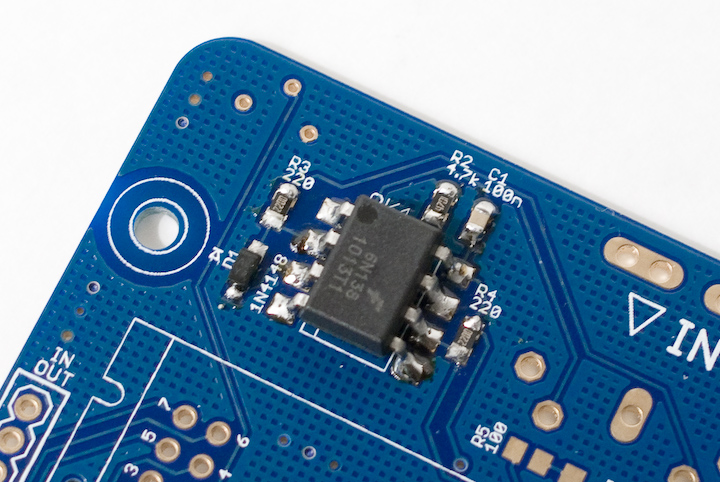
Let the solder flow up the pins.
Step 7: 3x 100R resistors, 2x LEDs (green and red)
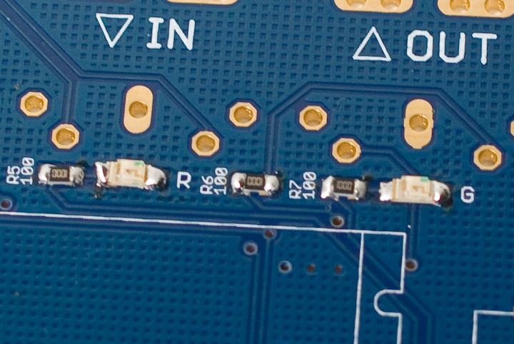
Look closely at the LED package. It has green dots on one side. They should go on the same side as the 3 dots pattern silkscreened on the PCB.
Which LED is green, which LED is red? The easiest way to check is to use a meter in continuity testing or diode testing mode. This will provide enough current to dimly light them.
Step 8: 1x LM1117, 2x 100uF caps, 2x Schottky diodes
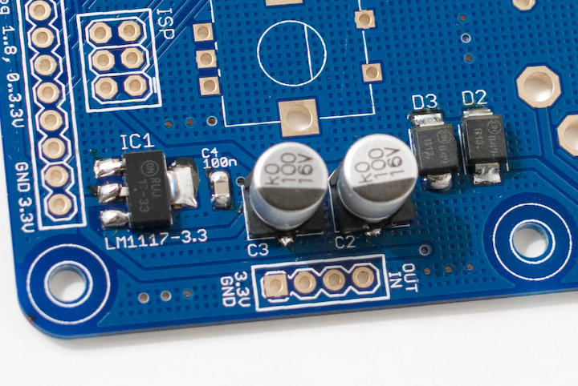
The Schottky diodes are a bit tricky to solder. Applying solder on a pad and moving in the diode won't work that well. If you can get someone to help you, the best solution will be to have someone firmly hold the diode into place with the tweezers, while you solder one side of the diode. The diodes are polarized, the cathode is identified by a stripe that should be on the same side as the symbol silkscreened on the board.
The capacitors are polarized too ; the shape silkscreened on the PCB should match the base of the capacitor. To solder the capacitor, hold the tip of the iron on the tiny "tail" on the capacitor's sides.
Step 9: 1x SPDT Switch, 1x DC connector, 1x 5k trimmer
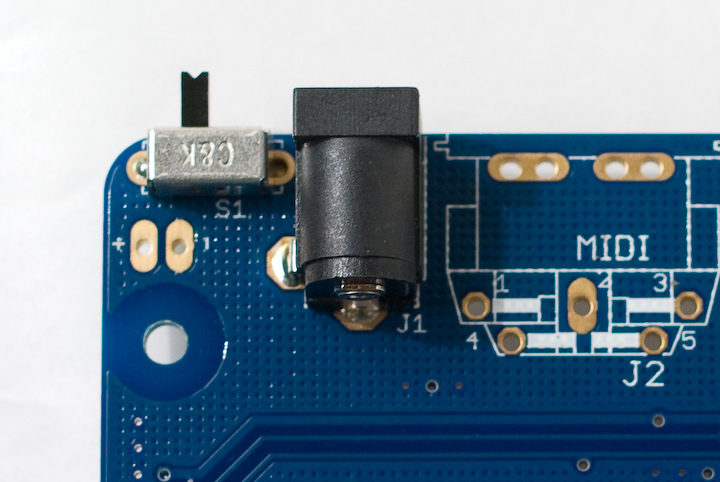
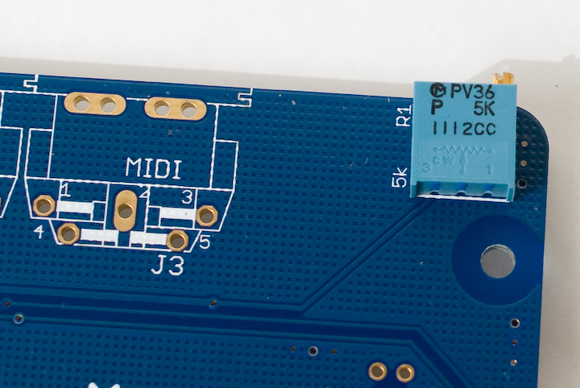
Step 10: ISP connector
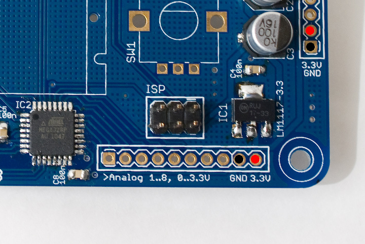
At this stage you can connect a DC power source (delivering a voltage between 5V and 9V, and with a current rating above 150mA) and check that you get 3.3V at the pads marked 3.3V.
Step 11: MIDI connectors, LCD module, encoder
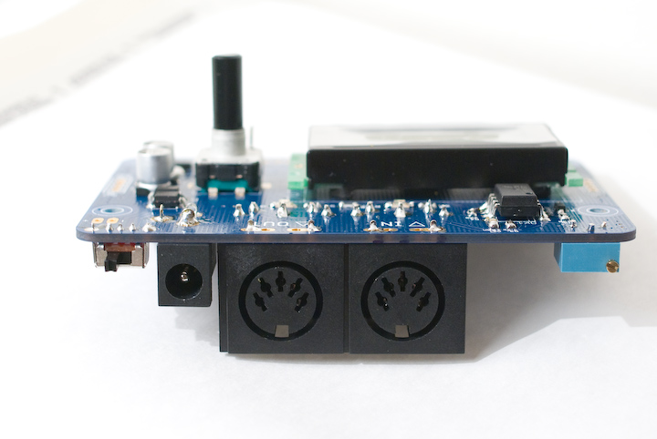
That's it! You can now adjust the contrast of the LCD. If you plan to use the MIDIpal with a 9V battery, you can solder the provided battery clip (black = negative, red = positive).
Step 12: Getting started
At any time, to select the "app" the Midipal will run, hold the encoder down for 2 seconds. Rotate the encoder to select an app, and press it to confirm. For example, you can select the "Monitor" app and check that incoming MIDI signals are correctly parsed.
Most of the MIDIpal apps work the following way: rotate the encoder to navigate in the list of parameters, press the encoder to select a parameter (the value of the parameter will be enclosed in square brackets), rotate the encoder to modify the value, and press the encoder to confirm.
This is a very short overview, experiment or check the manual!
Firmware setup
This section explains how to flash the firmware of the MIDIpal. Note that kits shipped after April 11th have their MCU already programmed - in this case, this step is optional - but you might still want to read a bit about this topic if you are interested in modifying the MIDIpal code!
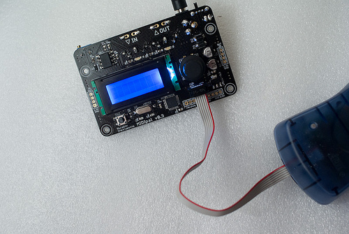
Option 1: build the code and upload it with avrdude.
The firmware code is hosted on
github, in the midipal
directory. It can be built and sent to the MCU with:
make -f midipal/makefile bake\_all
Option 2: install pre-built binaries with avrdude.
Download the following files:
Type the following commands in a terminal/command line:
avrdude -B 100 -V -p m328p -c avrispmkII -P usb -e -u -U efuse:w:0xfd:m
-U hfuse:w:0xd4:m -U lfuse:w:0xff:m -U lock:w:0x2f:m
avrdude -B 1 -V -p m328p -c avrispmkII -P usb -U
flash:w:midipal\_flash\_golden.hex:i -U
eeprom:w:midipal\_eeprom\_golden.hex:i -U lock:w:0x2f:m
Note that in these commands, you will have to replace:
- avrdude by the path to your local install of avrdude (for
example
C:\WinAVR\bin\avrdudeon windows). - avrispmkII by the name of your ISP programmer.
- usb by something else if your ISP programmer is not a USB one.
Option 3: use Atmel's AVRStudio.
Download the following files:
Launch AVRStudio and select AVR programming in the Tools menu.
Select AVRISP mkII, ATMega328p and ISP in the Tool, Device, Interface combo boxes and click on Apply. If you have another programmer or if it is connected to another port, you'll have to change the tool and interface settings.
Click on the Memories tab on the left column and select the
midipal_flash_golden.hex file in the Flash section. Select
midipal_eeprom_golden.hex file in the EEPROM section.
Connect the AVR ISP mkII programmer to the ISP connector on the MIDIpal board.
Click on the Interface settings tab on the left column and set the ISP clock to 16.1 kHz. Click on Set.
Click on the Fuses tab on the left column and set the values to EXTENDED = 0xFD ; HIGH = 0xD4 ; LOW = 0xFF. Click on Program.
Click on the Interface settings tab on the left column and set the ISP clock to 4 MHz. Click on Set.
Click on the Memories tab on the left column. Click on Program on the Flash section. Click on Program on the EEPROM section.
Hacking
ADC ports
The 8 pads labelled "Analog 1..8 0..3.3V" are connected to the ATMega ADC. They accept voltages in the 0..3.3V range (voltages outside of this range will damage the MCU), which can be converted to 8 freely assignable CC by the "controller" app on the MIDIpal firmware.
Chaining
You can easily chain several MIDIpal together to build one monster MIDI multi-FX. Two 4 pins connectors are located on each side of the MIDIpal to ease chaining. The following rules apply:
- You only need to connect to a battery/DC wall wart the power supply section of one unit in a chain. The other units will be powered by the 3.3V rail of the powered unit.
- Do not create feedback loops! That is to say, if the IN of unit A is connected to the OUT of unit B, do not connect the OUT of unit A to the IN of unit B.
The following image shows how to hook up two units.
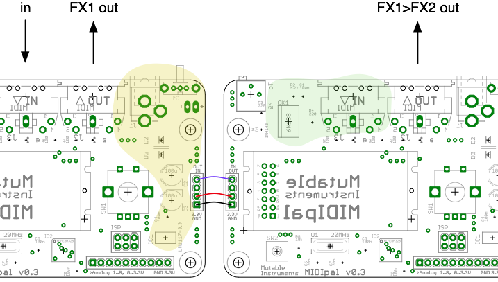
The areas in yellow and green can be left unpopulated. Notice how the OUT of the left unit is connected to the IN of the right unit, but not the other way round.
License
The MIDIpal is made available under a cc-by-sa-3.0 license ; and its source code under a GPL3.0 license.